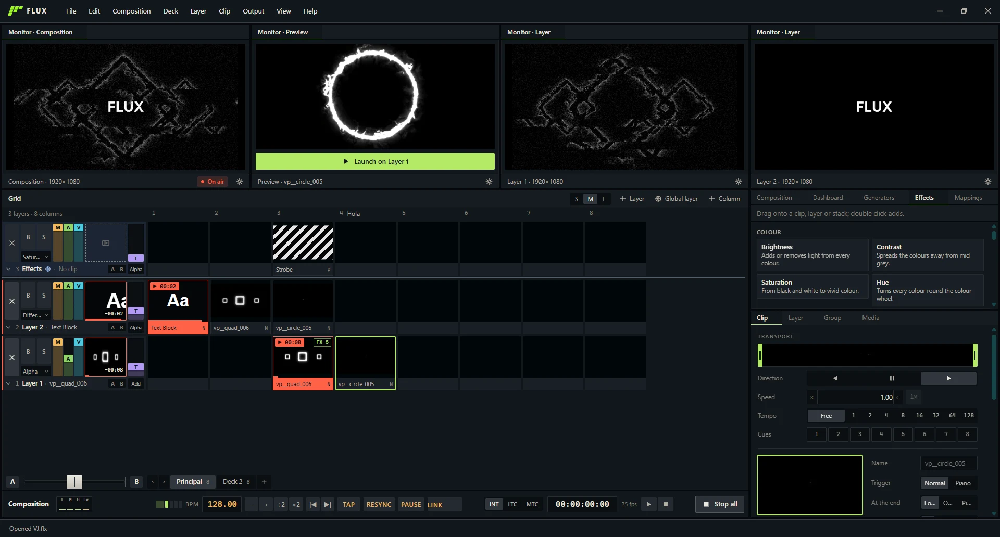
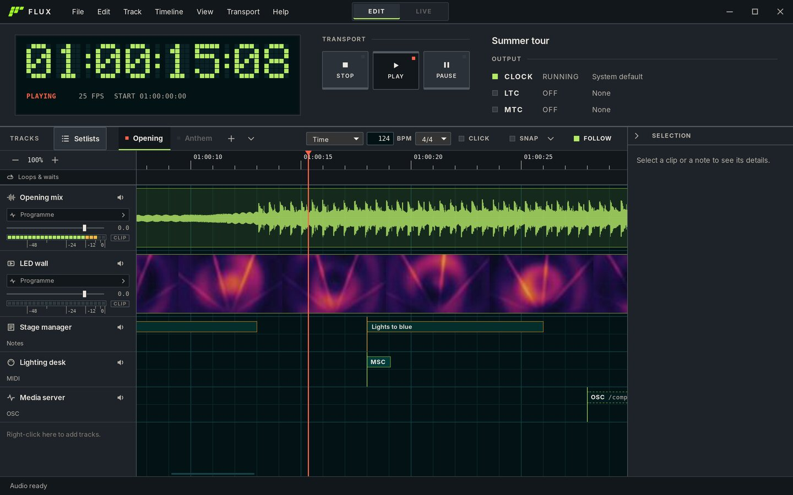
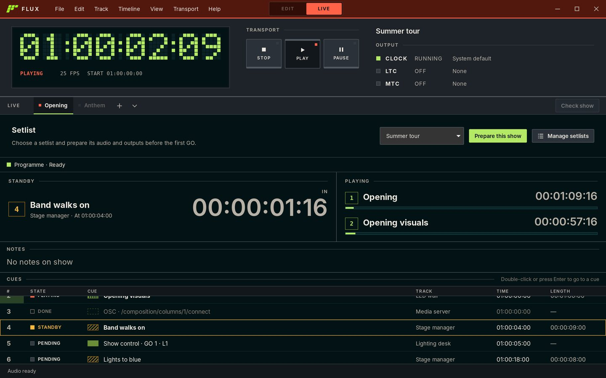
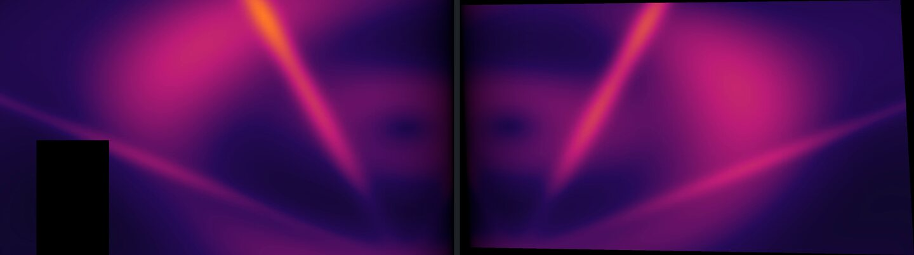

Show control. Live visuals.
Build timelines and run cues with timecode in CUE. Launch and mix visuals on the fly in VJ. Two modes in one desktop app for live shows.
v0.2.2 Windows · Linux


Three workflows. Two modes.
CUE
- Build a timeline
Arrange audio, video and cues against a single timecode clock.
- Run the cues
Work through a prepared setlist in Live with GO, countdowns and operator notes.
VJ
- Mix visuals live
Launch clips by hand, mix layers and send the composition to the stage.
Play visuals live in VJ mode
Start a VJ show to busk from a clip grid. Launch one clip or a whole column, mix video, images, generators and live inputs in layers, then send the composition to your screens.
- Decks and layers
- Organize clips in decks and keep global layers available across deck changes.
- Live mixing
- Stack effects, choose blend modes and mix layers assigned to either side of the A/B crossfader.
- Control and tempo
- Map MIDI, OSC, DMX or keys. Sync the beat clock with Ableton Link or MIDI clock.
- Projection mapping
- Route the mix to multiple screens with slices, edge blending, masks and per-slice test cards.
Build a show on the timeline
Arrange audio, video and cues together, from the opening to the last song.
- Timelines
- Several per project, each with its own tracks, frame rate and start offset.
- Tracks
- Audio, video, notes, MIDI and OSC.
- Audio
- Import wav, aiff, flac, mp3 and ogg, mixed on the audio device's clock, with tempo detection and a metronome click.
- Operator speech
- Write dialogue and attach generated speech (ElevenLabs, with your own API key) or imported and recorded audio. Generated speech is archived in the project, so it plays offline.
- Routing
- Send each track to a named destination or to Silent. Each computer maps destinations to its own interfaces and channels.
Run cues from the booth
Use Ctrl+1 for Edit and Ctrl+2 for Live. In Live, see the running cue, what is on standby and how long you have until the next cue.

- Time first
- A timecode you can read at a glance, with the transport state written beside it.
- The running cue
- The cue that is playing with its countdown, what is on standby, and the operator notes.
- The whole cue list
- Follow the full running order with the current and upcoming cues marked.
One clock, every output
The audio device's sample clock drives everything. Playback, LTC, MTC and cues are all read from the same position, so the time you see is the time you send.
- LTC
- Linear timecode through an audio interface.
- MTC
- MIDI timecode through a MIDI port.
- Frame rates
- 24, 25, 29.97 drop-frame and 30 fps.
- Cues
- MIDI tracks (notes, control and program change, MIDI Show Control, SysEx) and OSC tracks (UDP) fire in step with the timecode. Seeking never replays the events it jumped over.
- Hardware
- A missing device is explained and fixable, and never blocks opening a project.
Scroll sideways to see the full diagram.
Try the timecode clock
Put it on the screens
Map timeline video or a VJ composition onto monitors and projectors. Cut the picture into slices, pin each slice to its surface, blend overlapping projectors and mask areas that should stay dark.

- Screens
- Up to eight, each on a display of its own. They belong to the show; which display each opens on belongs to the computer.
- Slices
- Any part of the picture, placed by four corners that lean it to fit a surface seen at an angle.
- Soft edge
- Fades each side of a slice with an adjustable curve, so overlapping projectors blend.
- Masks
- Shapes of up to 32 points that black out what is under them, or everything else.
- Test pattern
- A test card with each slice outlined and named, the picture size, the time of day and a sweep, to line up the projectors.

Order the timelines into a show
A setlist orders timelines into a show, with repeated or omitted entries, manual or automatic transitions, waits, and loops with devamp. Audio, cues and timecode repeat together, driven by a GO action in Live.
- Transitions
- Manual or automatic, with exact delays and waits.
- Loops
- Until GO, or a counted number of turns, with an exit after the current turn.
- No copies
- Entries reference timelines instead of copying them, so an edit shows everywhere it is used.
Drive it from a controller
Start, stop, move between cues and timelines, and switch views from a MIDI controller (pads learned by touching them) or from OSC over UDP and TCP, for example a Stream Deck. FLUX stays the master clock: remote control moves it, and it never follows another.
It is set up in Preferences and belongs to the computer, not to the project.
| Address | Does |
|---|---|
| /flux/play | Play |
| /flux/stop | Stop and go back to the start |
| /flux/go | Run the GO action |
| /flux/cue/next | Seek to the next cue |
| /flux/cue/goto n | Seek to cue number n |
| /flux/view/live | Switch to the Live view |
Project files and media
Choose CUE or VJ when you create a .flx project. FLUX saves the show in the project and links to media on disk by default. Use File → Media to relink files or collect them when moving a show. Legacy .fxtc projects still open.
- project.json
- show data and media links
- audio/
- embedded audio, if present
- video/
- embedded video or images, if present
Specifications and status
- Audio import
- wav, aiff, flac, mp3, ogg
- Video import
- mp4, m4v, mov, webm
- Platforms
- Windows (installer), Linux (AppImage, DEB, RPM).
- Languages
- English, Spanish.
- Diagnostics
- A rotating log and a one-click zip of logs plus a system and device report, from the Help menu.
Features
- .flx projects with several timelines
- Audio and notes tracks, tempo detection, metronome
- LTC and MTC generation, with a full transport
- MIDI and OSC cue tracks
- DMX lighting tracks over Art-Net and sACN
- Live view and setlists with GO
- Spoken operator tracks
- MIDI and OSC remote control, with lit pads
- Video tracks on several screens, with slices, soft edges and masks
- VJ clip launching, layered mixing and projection mapping
Not built yet
- Chasing an external timecode
- macOS release builds
Get FLUX
FLUX is in early development. Pick the installer for your system on the latest release page: the Windows setup, or the Linux AppImage, DEB or RPM.
- Version
- 0.2.2
- Platforms
- Windows, Linux
- Project file
- .flx